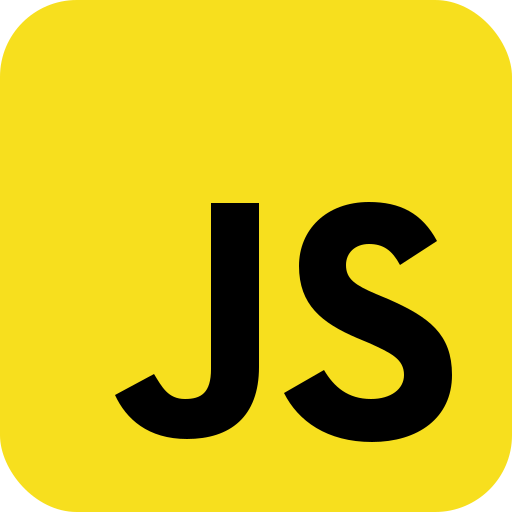
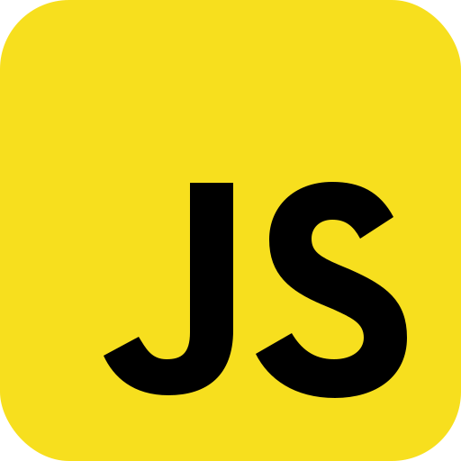

Apaixonado por tecnologia e extremamente curioso para saber como as coisas funcionam,
desde de pequeno sempre tive e tenho o sonho de poder ajudar a sociedade de alguma maneira,
foi a partir desse pensamento que fui para o curso de Engenharia Mecatrônica na UFRN.
Durante o curso pude desenvolver muitas habilidades, principalmente, lógica e programação,
o que me renderam um estagio na centro de lançamento Barreira do Inferno,
trabalhando em projetos envolvendo controle de sistemas embarcados e programação C/ C++.
No decorrer da graduação acabei entrando em uma empresa júnior intitulada Include Engenharia e
hoje posso dizer que foi a melhor escolha que fi. Porque, lá pude desenvolver habilidades tanto tecnicas quanto comportamentais como:
oratória, negociação e liderança.
Na empresa fiz parte da diretoria de marketing, tendo a oportinidade aprender conceitos de design utilizando o Photoshop e
graças a um dos serviços da Include, descobri o mundo do desenvolvimento mobile e Web, desde então tenho feito cursos na Udemy,
Rocketseat e Gama Academy de desenvolvimento Web, aprendendo bastante sobre: Javascript, Typescript, CSS, HTML5, Angular, React, NodeJs, Python...
Atualmente trabalho na TOTVS RN, com desenvolvimento no framework FLUIG.
Tecnologias:

 
